01
用 AI 放大自己不同角色的能力
把複雜的技術，變成人人都能上手的生產力。
i.
外商軟體工程師
超過 15 年開發經驗，擔任過任工程師、專案經理、技術主管，具備跨部門溝通與資訊整合能力。
ii.
暢銷書作家
出版 7 本技術與職涯類專書，包括《ChatGPT 與 AI 繪圖效率大師》、《工程師下班有約》、《給全端工程師的職涯筆記》等。
iii.
企業內訓講師
授課涵蓋生成式 AI 應用、程式開發、數位轉型，協助不同產業快速導入 AI 工具提升生產力。
iv.
部落客／專欄作家
撰寫 400+ 篇文章、累積超過 500 萬瀏覽，長期分享最新技術、團隊合作與工程師職涯。
v.
YouTube 創作者
經營頻道《工程師下班有約》，內容涵蓋職涯發展、Vibe Coding 與生成式 AI 工具。
02
出版著作
七本專書，從爬蟲、職涯寫到生成式 AI —— 包含全台第一本 ChatGPT 應用專書。

工程師下班有約：企業內訓講師帶你認清職涯真相！
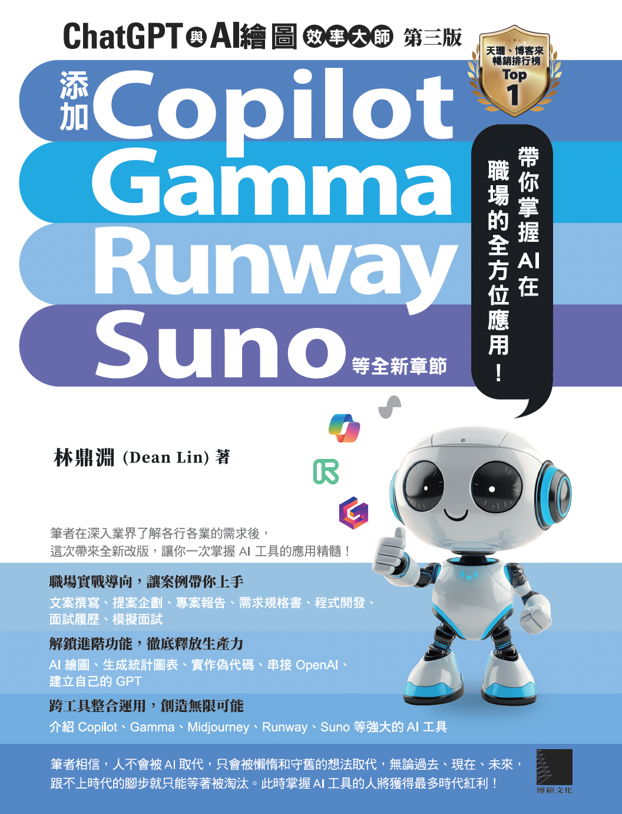
ChatGPT 與 AI 繪圖效率大師（新增 Copilot、Gamma、Runway、Suno）
ChatGPT 與 AI 繪圖效率大師（添加 GPT-4、Bing Chat 全新章節）
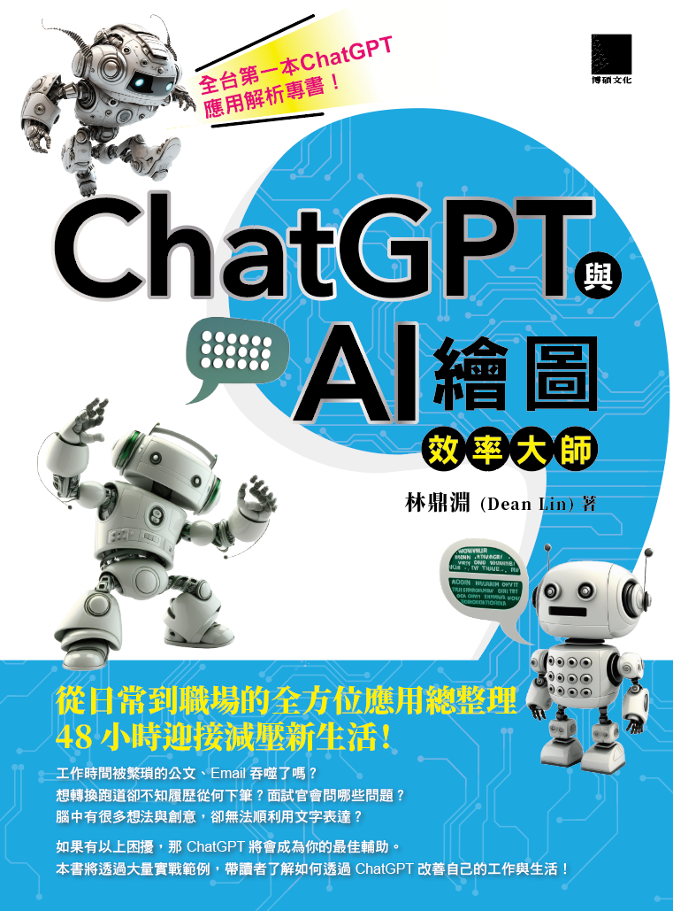
ChatGPT 與 AI 繪圖效率大師：從日常到職場的全方位應用
給全端工程師的職涯生存筆記（ChatGPT 加強版）
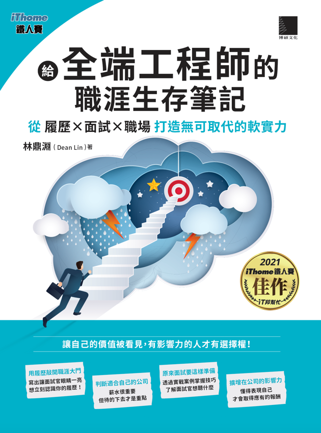
給全端工程師的職涯生存筆記：履歷×面試×職場
JavaScript 爬蟲新思路！用 Node.js 打造 FB & IG 爬蟲專案
暢銷實績・百大排行榜
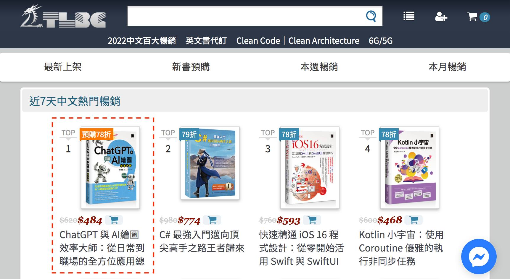
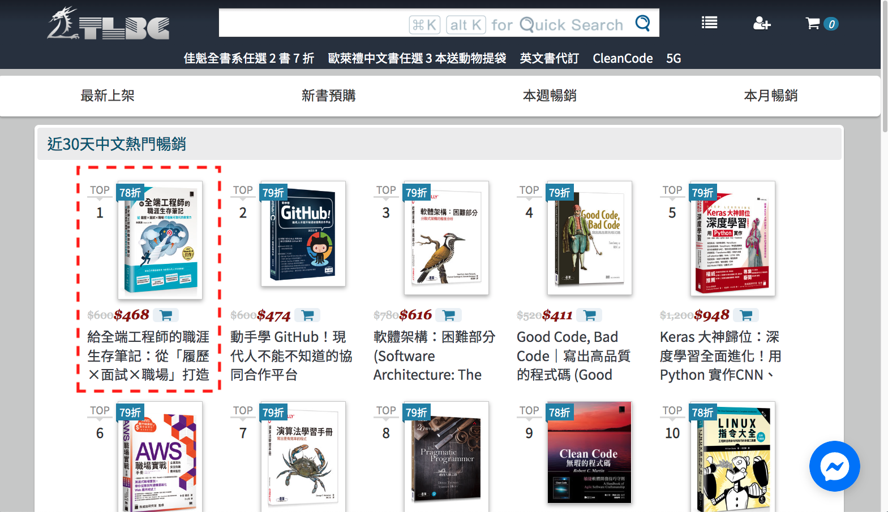
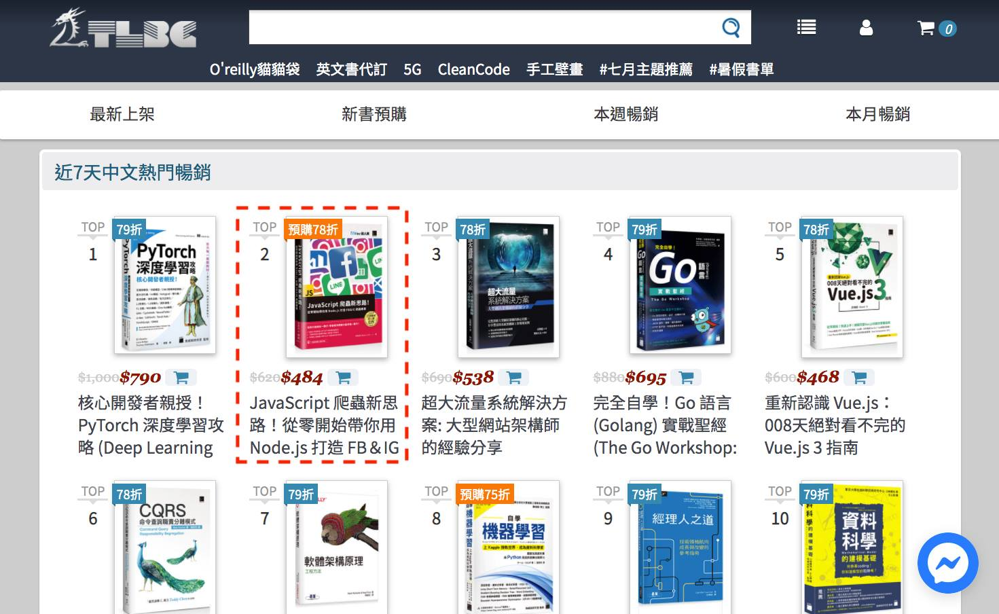
03
授課足跡
從上市企業到國小教室，累積 93 場授課與 9 次顧問諮詢——點擊單位名稱即可展開課程清單。
21
線上／平台課程
跨 15 個合作平台
47+7
企業內訓
含 7 次顧問陪跑
25+2
校園講座
含 2 次課後諮詢
企業內訓 Corporate Training
校園講座 Campus Talks
線上／平台課程 Online Courses
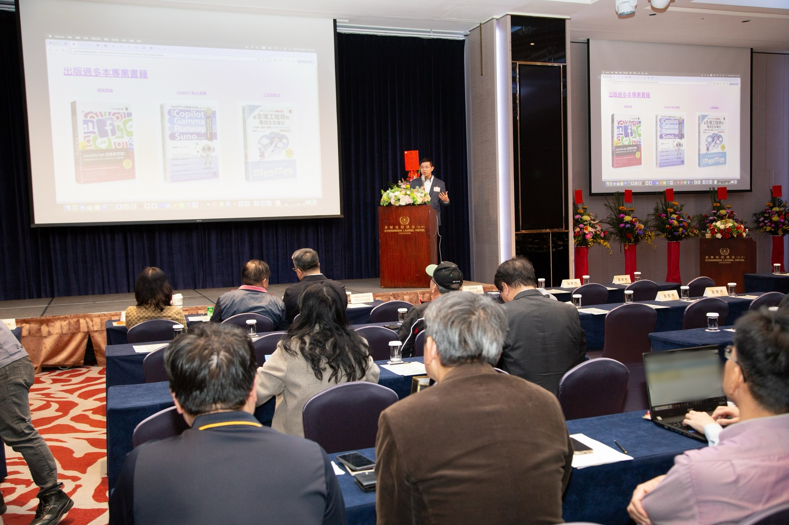
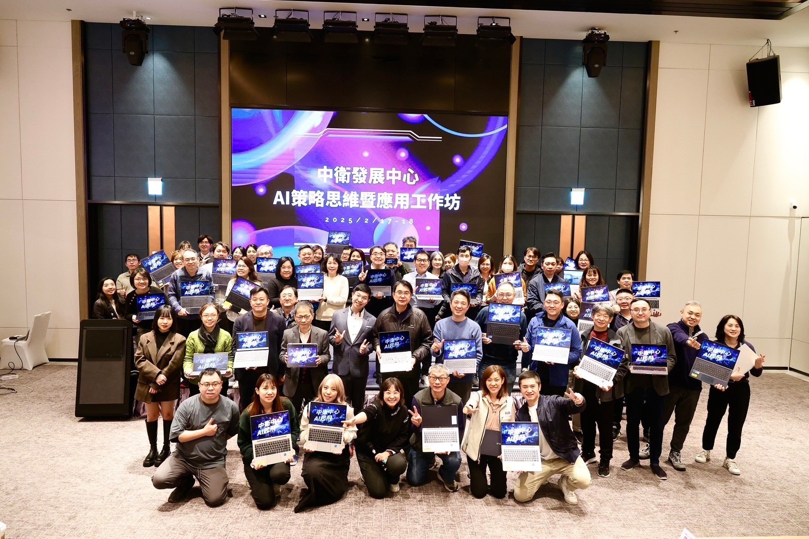
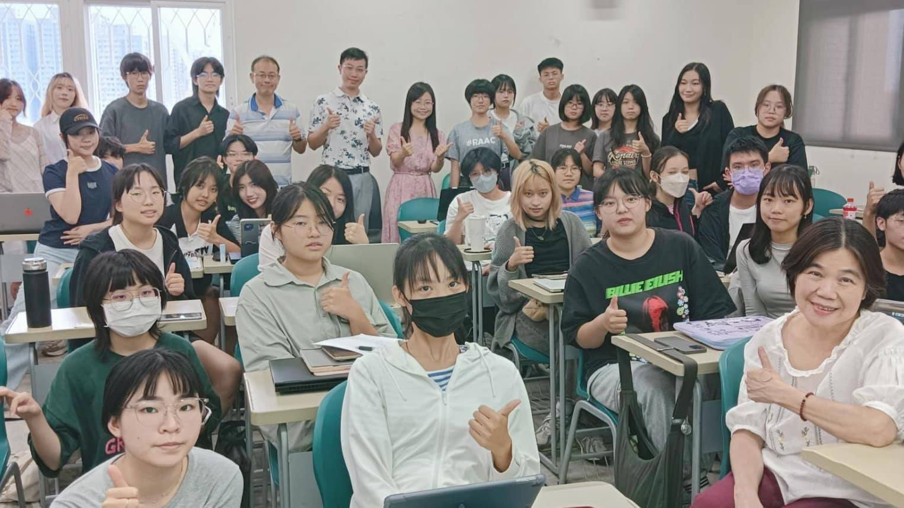
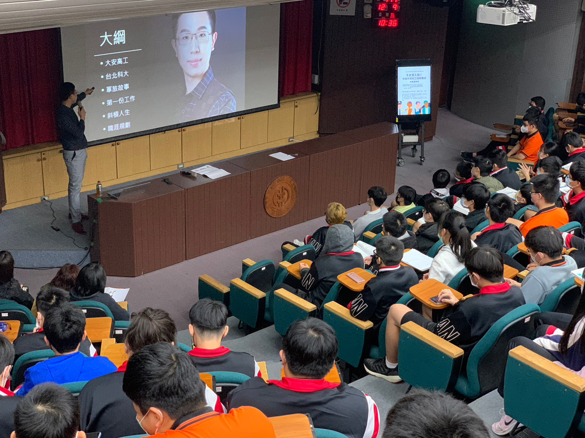
04
媒體與專欄
商周名人堂、科技島駐站專家，並受經理人雜誌、人間衛視、1111 人力銀行等單位專訪。
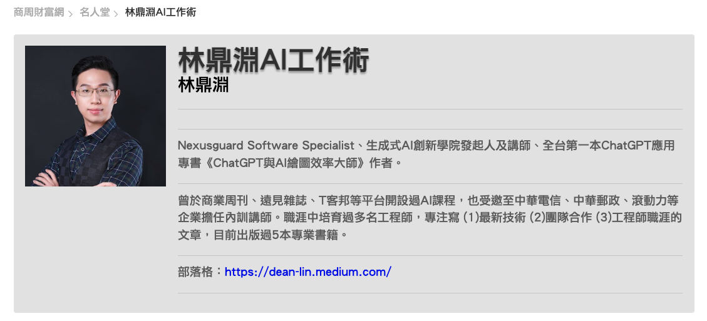

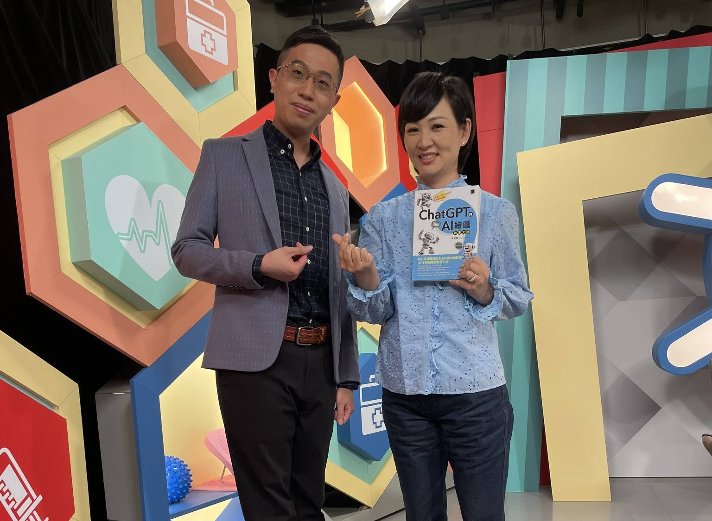
AI 時代，是將想法化為成果的最好時機 DEAN LIN・工程師下班有約